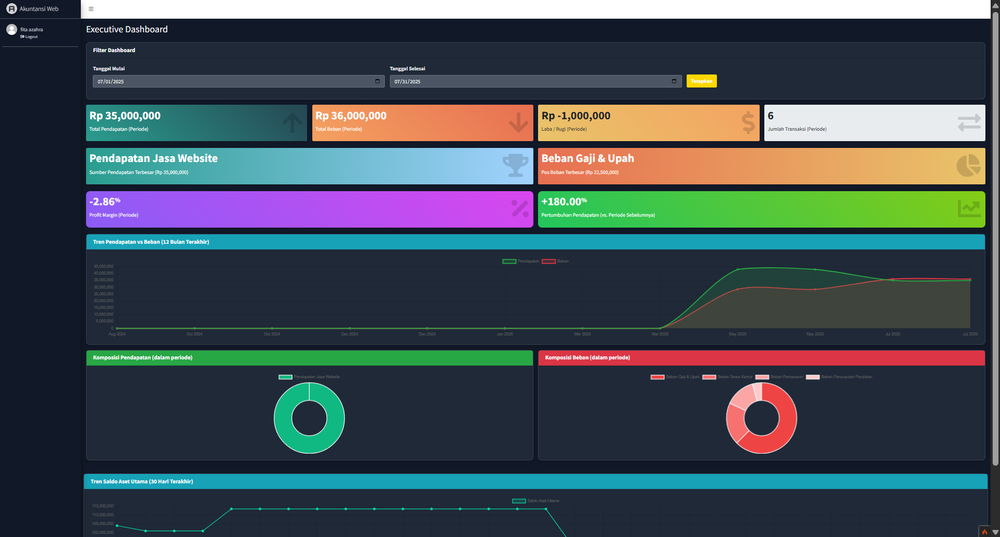
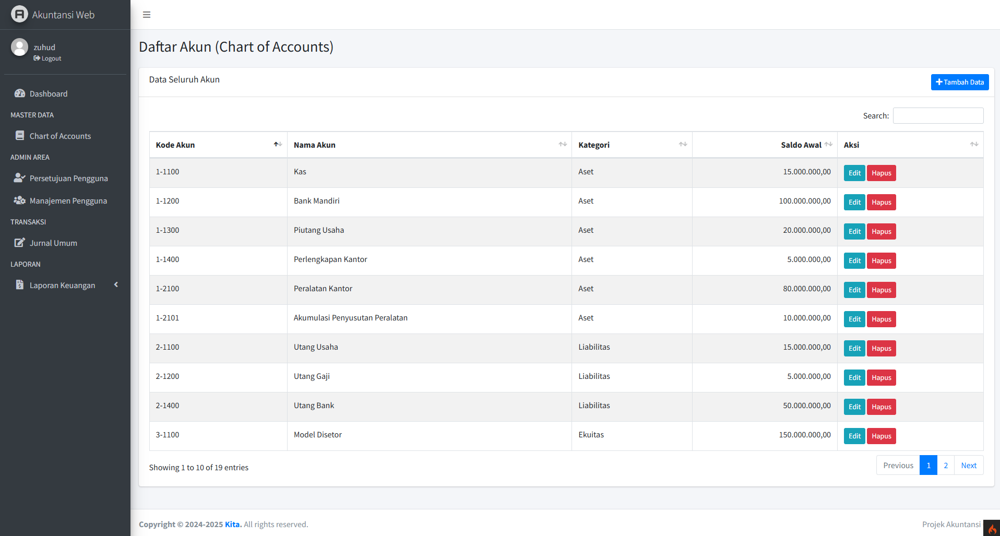
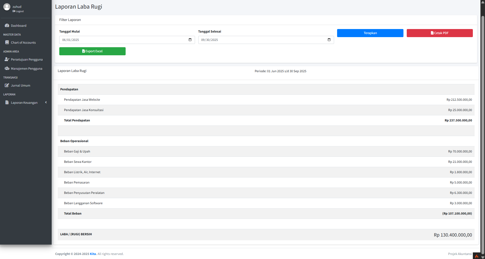

Sistem Informasi Akuntansi Berbasis Web
Aplikasi web komprehensif yang dibangun dari nol menggunakan PHP dan framework CodeIgniter 4 untuk mengelola siklus akuntansi penuh secara mandiri.



Deskripsi Lengkap
Aplikasi web komprehensif yang dibangun dari nol menggunakan PHP dan framework CodeIgniter 4. Sistem ini dirancang sebagai solusi digital bagi UMKM untuk mengelola siklus akuntansi penuh secara mandiri, mulai dari pencatatan jurnal, posting otomatis ke buku besar, hingga menghasilkan laporan keuangan utama (Laba Rugi, Neraca) yang akurat dan dapat diekspor.
Fitur Utama
- Mesin Akuntansi Full-Cycle
- Manajemen Pengguna & Hak Akses (RBAC) Berlapis
- Laporan Keuangan Dinamis & Portabel
- Dashboard Eksekutif Interaktif
Teknologi yang Digunakan
Backend: PHP 8.2, CodeIgniter 4 (Arsitektur MVC)
Frontend: HTML5, CSS3, JavaScript, jQuery, AdminLTE 3
Template
Database: MySQL (dikelola via XAMPP)
Manajemen Dependensi: Composer
Library & Tools: PHPMailer, DomPDF, PhpSpreadsheet, Chart.js,
SweetAlert2, DataTables